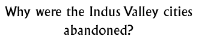

Discussion 2  |
|
Objectives: To encourage pupils to think about why the Indus Valley cities declined and were abandoned over a period of time. To discuss the possibilities and accept or reject ideas based upon evidence.
Materials: Photographs, books and/or illustrations of the Indus Valley cities, maps of the landscape.
Class set-up: Teacher presentation / Class discussion
Vocabulary: decline, abandon, Aryan, silt
Discussion: Have the children brainstorm some of the reasons why a civilization might fail Ð draw examples from more commonly known ones, if understood, or simply ask for ideas about disaster, decline or cataclysm.
What could have caused this society to stop or fail? Arrange the ideas the children come up with into sections, there could be sections for sudden, dramatic changes like invasion, disease or famine. There could be a section for large natural cataclysms like earthquakes, floods and volcanoes. There should be a further section for gradual change which the children may not think of without prompting. Almost certainly, the decline of the Indus Valley civilization took place over a long period of time, with the population moving away to different areas after changes to the natural environment in the area. It is likely that a number of factors prompted the people to leave the area as the river valley was no longer able to support systems of trade, travel and agriculture.There is evidence to support theories of a breakdown in the rigid cultural system that dominated the cities. When the traditional social structures began to break down, decline was inevitable. What would the people have gone to look for in different areas?What would have happened to the people's lives if the river had been diverted into different areas? There were/are some theories about Aryan tribes invading the Indus Valley from the north, although there is little evidence to suggest this, and with older children the question can be discussed in more detail. Background information: Climate in IndiaRiver Indus River Saraswati The end of the Indus Valley Civilization
© The British Museum |